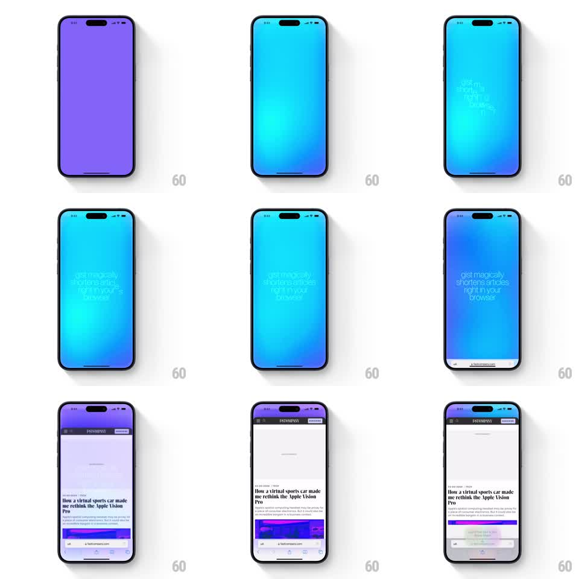

Media
Frame-by-frame

Rebuild this animation 1:1: Gist's onboarding - a gradient screen where scattered text fragments assemble into the pitch line "gist magically shortens articles right in your browser", then the screen slides up into a live browser demo with a springy tooltip guiding the first action.

Rebuild this animation 1:1: Gist's onboarding - a gradient screen where scattered text fragments assemble into the pitch line "gist magically shortens articles right in your browser", then the screen slides up into a live browser demo with a springy tooltip guiding the first action. ## Integration Integration: stack-agnostic spec - springs given as stiffness/damping, timed motions as duration + curve; map every value to your framework and animation library of choice. ## Scene Full-screen teal-to-cyan gradient. Text fragments float in from scattered positions and assemble into a centered multi-line pitch. Then the gradient screen slides up to reveal a browser chrome view (Fast Company article open), and a small tooltip bubble appears near the toolbar pointing at the extension action. ## Motion spec Pattern: text assembly into a guided product reveal. - Words/fragments drift in from loose scattered positions (each from a different offset, +-40px) and converge to their final line positions over ~700ms, ease-out, staggered 60ms per fragment; opacity rides along. - The assembled pitch holds ~1s. - Screen transition: the gradient slides up and away (~450ms, ease-in-out), the browser demo revealed beneath, sliding a touch slower for parallax. - The tooltip pops in next to the toolbar button (scale 0.6 to 1.0, spring stiffness ~380, damping ~17) and then nudges gently (translateY +-3px loop, 1.5s) to draw the eye. ## Calibration - Fragments converge; they do not type on. The scatter-to-grid motion is the brand idea (gist from noise). - The tooltip must feel attached to its anchor - pop from the anchor point, not from center. ## Reduced motion Pitch fades in assembled; screens crossfade; tooltip appears static. ## Don't miss - The gradient is teal-dominant with a cyan glow center; keep it cool-toned, no purple. - The demo is a real article page (headline visible) - the product truth sells the promise made by the pitch.